|
AmiPixelShop Layer-based image editor for AmigaOS 3.2 - Version 0.6 Early Beta - User Guide |
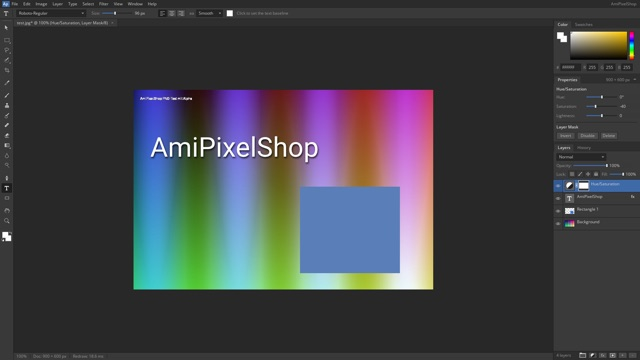
| Part I - Getting started Part II - Editing | Part III - AI features Part IV - Amiga Part V - Reference |
| Part I - Getting started |
AmiPixelShop is a modern, layer-based image editor written natively for the Amiga. It is not a port and nothing was reverse-engineered: every function was rebuilt from scratch in C and 68k assembler, modelled on the workflow of today's professional image editors.
Highlights:
This is an early beta. Expect bugs - and please report them (see Reporting bugs).
| CPU | PiStorm (Emu68, JIT-emulated 68040 with FPU) - recommended and tested. A real 68060 with FPU might work, but will be slow at high resolutions (untested). |
| Graphics | RTG (Picasso96 / P96) with a 24 or 32 bit screen mode, 1024×600 up to 1920×1080. |
| OS | AmigaOS 3.2 (tested with 3.2.3). |
| Memory | At least 128 MB Fast RAM, more for large images. A layer of 1920×1080 needs about 8 MB. |
| For the AI features | A TCP/IP stack (Roadshow), AmiSSL v5, an internet connection and an OpenRouter API key. Everything else works without them. |
| Tested on | Amiga 500 + PiStorm (Raspberry Pi, Emu68), AmigaOS 3.2.3, P96, Roadshow, AmiSSL 5.27. |
Updates. When the Amiga is online (Roadshow and AmiSSL v5), AmiPixelShop checks GitHub for a newer version at start. If there is one, it asks: Install downloads it, replaces the program, this Guide and its pictures, and restarts AmiPixelShop (your icon stays as it is; the previous program is kept as AmiPixelShop.old). Later asks again next time, Skip This Version stays quiet until an even newer one comes out. Check by hand with Help > Check for Updates...; turn the check at start off with Help > Check for Updates at Start. Without a network nothing happens.
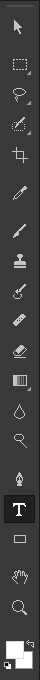 |
Navigation: hold Space and drag to scroll; mouse wheel or Ctrl++ / Ctrl+- to zoom; Ctrl+0 fits the image, Ctrl+1 shows 100%. |
File > New... (Ctrl+N) opens the New Document dialog. Pick a preset from the tabs Recent, Photo, Print, Web, Mobile, Film & Video, Amiga or Saved, or type your own size on the right. Save Preset... keeps your own sizes in the Saved tab.
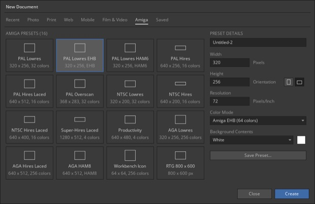
The Amiga tab has the classic screen formats: PAL and NTSC Lowres, Hires, Interlace and Overscan, Super-Hires, Productivity, AGA, EHB, HAM6 and HAM8, a Workbench icon and an RTG size. The Color Mode of such a document is remembered for Reduce Colors and the IFF export. You always paint in full color - the colors are reduced at the end.
| Part II - Editing |
The letter is the keyboard shortcut. Shift + letter cycles through the tools of the same slot.
| Tool | Key | What it does |
|---|---|---|
| Move and select | ||
| Move | V | Moves the layer, group, several selected layers or only the selected pixels. Arrow keys: 1 px, Shift: 10 px. Auto-Select picks the layer under the mouse (Ctrl+click toggles). |
| Rectangular / Elliptical Marquee | M | Rectangle or ellipse selection. Shift: add, Alt: subtract, Shift+Alt: intersect. |
| Lasso / Polygonal Lasso | L | Freehand selection, or straight segments (Return, double-click or a click on the start point closes). |
| Quick Selection / Magic Wand | W | Paint over an object and the selection snaps to its edges - or select by color with a tolerance. |
| Crop | C | Drag the frame or its handles, Return applies. The frame can also extend the canvas. |
| Eyedropper | I | Picks a color from the image (also Alt+click with the brush). |
| Paint and retouch | ||
| Brush | B | Paints with the foreground color. Size, hardness, opacity, flow. , and . change the size. Shift+click draws a straight line. |
| Clone Stamp | S | Alt+click sets the source, then paint to copy. |
| History Brush | Y | Paints back an earlier state; choose the source in the History panel (left column). |
| Spot Healing Brush | J | Paint over a spot: it is replaced with texture from the surroundings. With Generative AI checked it removes whole objects - see Remove objects. |
| Eraser | E | Erases to transparency (in a mask: paints with the background color). |
| Gradient / Paint Bucket | G | Drag a gradient direction - or fill areas of similar color. |
| Blur / Sharpen / Smudge | R | Retouching with a brush. |
| Dodge / Burn | O | Lightens or darkens with a brush. |
| Vector and type | ||
| Pen | P | Draws paths with corner and curve points. See Pen tool. |
| Horizontal Type | T | Editable text. See Type. |
| Shape | U | Rectangle, ellipse or line with fill and stroke - each shape on its own layer. |
| Navigate | ||
| Hand | H | Scrolls the view (or hold Space). |
| Zoom | Z | Click zooms in, Alt+click zooms out. |
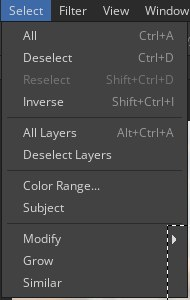 |
What you can do with a selection:
|
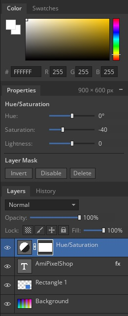 |
Layers panel
GroupsCtrl+G groups the selected layers. Fold with the triangle. Blend mode Pass Through or isolated, with opacity and mask. Layer masks
More layer types
|
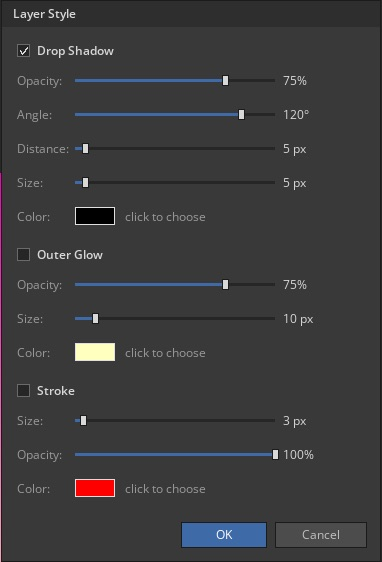
Shows the settings of the active layer. Click its header to fold it away.
| Active layer | Shown |
|---|---|
| Pixel layer | Position and size, Free Transform, Flip H / Flip V |
| Type layer | Size, tracking, leading and alignment |
| Adjustment layer | Its sliders, live. Levels/Curves: button Edit Levels... / Edit Curves... with histogram |
| Group | Number of layers, Ungroup, Merge Group |
| Generative layer | Prompt, variants < 1 / 2 >, Generate again (see chapter 20) |
| Layer mask | Invert, Apply, Disable/Enable, Delete |
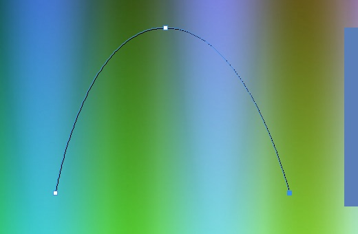
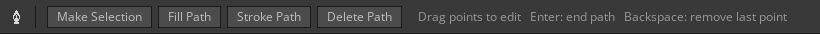
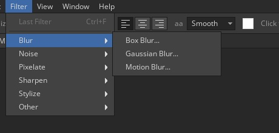 |
Image > Adjustments: Brightness/Contrast, Levels (Ctrl+L), Curves (Ctrl+M), Hue/Saturation (Ctrl+U), Desaturate, Invert (Ctrl+I), Threshold, Posterize - all with live preview. For non-destructive work use adjustment layers. Filter: Box Blur, Gaussian Blur, Motion Blur, Add Noise, Median, Mosaic, Sharpen, Sharpen More, Unsharp Mask, Emboss, Find Edges, High Pass, Liquify. Ctrl+F repeats the last filter. With a selection, filters only work inside it. With a mask active, they work on the mask. Filter > Amiga: Reduce Colors and palettes, see chapter 22. |
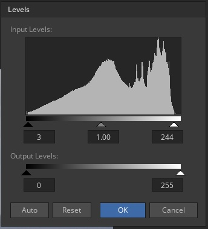 |
Levels shows the histogram of the layer (or of the selection). Drag the triangles under it: black point, gamma (gray) and white point; the lower bar sets the output range. The darkened bars are the tones that get clipped. Click a number to type a value. Auto sets black and white point so that only 0.1 % of the pixels are clipped - a quick, safe contrast boost. Reset goes back to 0 / 1.00 / 255. Curves shows the histogram of the chosen channel behind the curve. As adjustment layer: the sliders are in the Properties panel, the button Edit Levels... opens this dialog with the histogram of the image below. |
| Part III - AI features |
AmiPixelShop can use current image AI models to fill, remove, extend and cut out image content - directly from the Amiga, over an encrypted connection.
| Function | Where | Result |
|---|---|---|
| Generative Fill | Task bar, Edit menu | New content in the selection, from your description |
| Remove | Task bar, Edit menu, Spot Healing Brush | Objects disappear, the background is continued |
| Extend | Task bar on empty canvas | The image is continued into transparent areas |
| Select Subject | Task bar, Select menu | Selection of the main subject |
| Remove Background | Task bar, Layer menu | Layer mask that hides the background |
The work is done by models on the internet. AmiPixelShop sends only the part of the image that is needed, and puts the result back only inside your selection on a new layer - the rest of the picture stays pixel-identical and the original layer is never changed.
Like in today's image editors, a small bar floats below the image and offers the AI functions that fit the moment:
| Situation | Task bar |
|---|---|
| No selection (Move or selection tool active) |
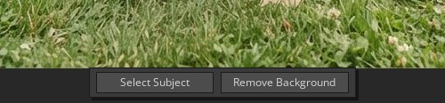 Select Subject and Remove Background |
| With a selection | 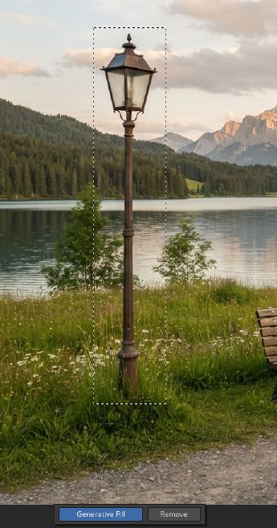 Generative Fill and Remove |
| While the AI works | 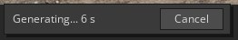 Seconds so far; Cancel stops the request. You can keep working. |
The bar always stays outside the image (below it, above it if there is no room, else at the bottom of the window). Window > Contextual Task Bar hides or shows it; all functions are also in the menus:
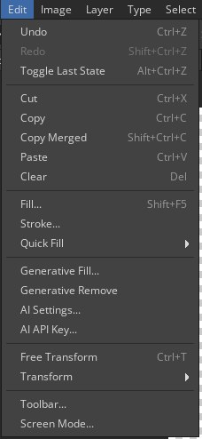 |
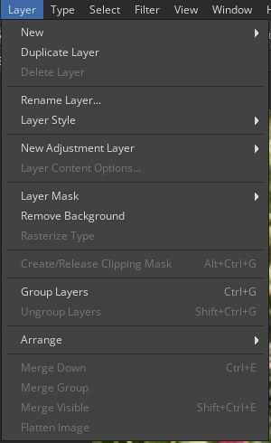 |
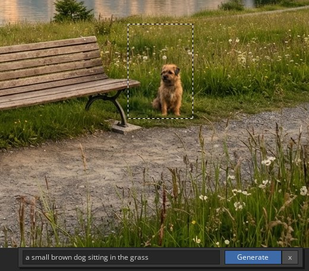 |
After about 10-15 seconds the result appears on a new layer named Gen: ... with your selection as layer mask - the original is untouched. Light, perspective and colors are matched to the picture. Leave the description empty to fill the area so that it fits the surroundings. |
Select the object - generously, including its shadow - and click Remove in the task bar (or Edit > Generative Remove).
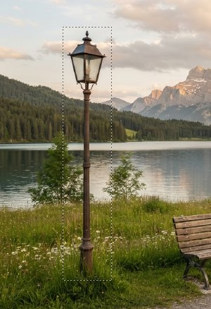 Before |
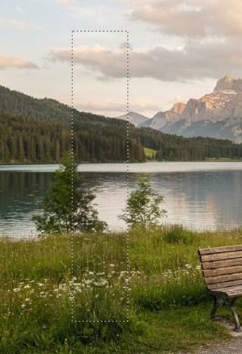 After |
Choose the Spot Healing Brush (J) and check Generative AI in the options bar:
Paint over the object - the stroke is shown in pink. When you release the mouse the object is removed. You do not have to cover it completely: parts next to the stroke that belong to the object are removed too.
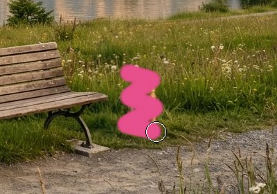 Paint over it |
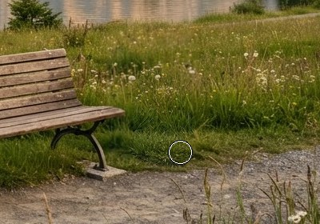 Result |
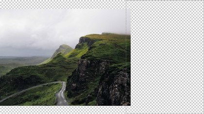 Before: larger canvas |
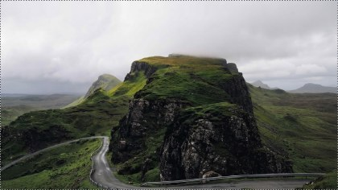 After: road, hills and sky continued |
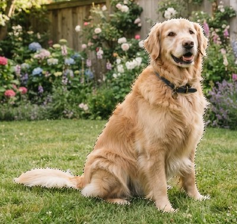 Select > Subject |
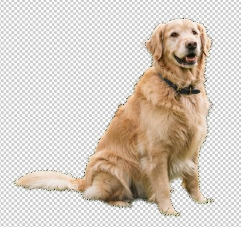 Layer > Remove Background |
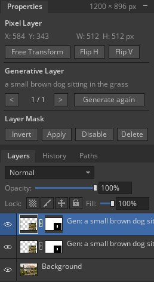 |
Every Generative Fill, Remove or Extend creates a generative layer (Gen: ...). When it is active, the Properties panel shows:
Up to six variants are kept while the document is open. The shown variant is what you see and what is saved. Description and type of the layer are saved in .aps files, so Generate again also works later. Generative layers are normal pixel layers with a mask: move them, change opacity, paint into the mask to blend the edge, or merge them down when you are done. |
Edit > AI Settings...
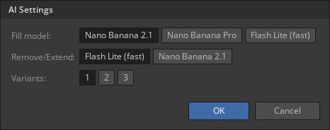
| Fill model | Used for Generative Fill with a description. Nano Banana 2.1 (default, about 4 cents), Nano Banana Pro (best quality, about 13 cents, slower), Flash Lite (fastest, simpler results). |
| Remove/Extend | Used for Remove, Extend, Select Subject and Remove Background. Flash Lite (default, fast, about 3.4 cents) or Nano Banana 2.1. |
| Variants | 1, 2 or 3 variants per Generative Fill. Each variant is a separate request and costs extra. |
| Message | Meaning |
|---|---|
| No OpenRouter API key found | Enter your key with Edit > AI API Key... |
| AmiSSL v5 not installed / No TCP/IP stack | Install AmiSSL v5 and start Roadshow. |
| Certificate error | Check the date and time of your Amiga, update AmiSSL. |
| ... too similar to an existing image | The model refuses to reproduce well-known published photos. Try a larger selection or add a description. |
| blocked by the model's safety filter | The model does not process this content. |
| Timeout | No answer for a long time - check the network and try again. |
| Part IV - Amiga |
Filter > Amiga > Reduce Colors... builds the best palette for the image and shows the result live, together with the palette:
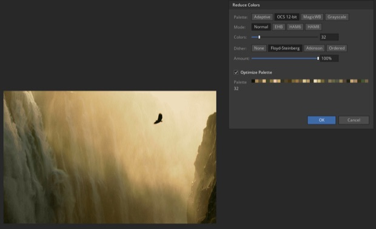
| Palette | Adaptive (24 bit colors, for AGA and RTG), OCS 12-bit (4 bit per channel, like OCS/ECS hardware), MagicWB (the 8 MagicWB colors stay, the rest is chosen for the image), Grayscale or Fixed (a given palette, see below). |
| Mode | Normal with 2 to 256 colors, EHB (32 colors plus 32 half-bright ones - both halves are optimized together), HAM6 and HAM8 (each pixel picks the best of a palette color or changing one channel of its left neighbour). |
| Dither | None, Floyd-Steinberg (smoothest gradients), Atkinson (crisper, keeps more contrast) or Ordered (regular 8×8 pattern, good for animations). Amount sets the strength. |
| Optimize Palette | Refines the palette further for the best match as the eye sees it. |
File > Export as IFF ILBM... writes a standard IFF picture (also Save As with the ending .iff): with the palette of the last Reduce Colors, or reduced automatically to the color mode of the document. The screen mode (Lowres/Hires, Interlace, EHB, HAM) is stored in the file, so viewers and paint programs show it correctly. The palette and settings are also saved in .aps files.
For graphics that must fit an existing picture or game:
| Part V - Reference |
| Format | Open | Save | Notes |
|---|---|---|---|
| .aps | yes | yes | Native format: layers, groups, masks, styles, adjustment layers, editable text, paths, palettes, AI prompts. |
| .psd | yes | - | Layered files (RGB or grayscale, 8 bit, all compressions): layers, groups, masks, clipping masks, blend modes, opacity, adjustment layers (Levels, Hue/Saturation, Brightness/Contrast, Invert, Threshold, Posterize), drop shadow and outer glow. Text and smart objects come in as pixels. Files too large for the memory open flattened. |
| .png | yes | yes | With transparency. |
| .jpg | yes | yes | Flattened, quality 90. |
| .iff | yes | yes | IFF ILBM and PBM, 1-8 bitplanes, EHB, HAM6/HAM8, 24 bit, brushes with transparency. See Amiga colors and IFF. |
| other | yes | - | GIF, BMP and more via installed datatypes. |
From the Shell several pictures open at once: AmiPixelShop pic1.iff pic2.png pic3.psd.
"Ctrl" also works with the Amiga keys. Tool keys: see the Tools table.
| File and edit | Selection and layers | ||
|---|---|---|---|
| Ctrl+N / Ctrl+O | New / Open | Ctrl+A / Ctrl+D | Select all / Deselect |
| Ctrl+S / Shift+Ctrl+S | Save / Save As | Shift+Ctrl+I | Inverse selection |
| Ctrl+W / Alt+Ctrl+W | Close / Close All | Shift+Ctrl+D | Reselect |
| Ctrl+Q | Quit | Shift+F6 | Feather |
| F12 | Revert | Shift+Ctrl+N | New layer |
| Ctrl+Z / Shift+Ctrl+Z | Undo / Redo | Ctrl+J / Shift+Ctrl+J | Layer via Copy / Cut |
| Alt+Ctrl+Z | Toggle last state | Ctrl+G / Shift+Ctrl+G | Group / Ungroup |
| Ctrl+X / C / V | Cut / Copy / Paste | Ctrl+E / Shift+Ctrl+E | Merge down / visible |
| Shift+Ctrl+C | Copy Merged | Alt+Ctrl+G | Clipping mask |
| Shift+F5 | Fill... | Alt+Ctrl+A | Select all layers |
| Alt / Ctrl+Backspace | Fill foreground / background | Ctrl+[ / Ctrl+] | Layer down / up |
| Image | View and painting | ||
| Ctrl+T | Free Transform | Ctrl++ / Ctrl+- | Zoom in / out |
| Ctrl+L / M / U / I | Levels / Curves / Hue/Sat / Invert | Ctrl+0 / Ctrl+1 | Fit / 100% |
| Shift+Ctrl+U | Desaturate | Space (hold) | Hand tool |
| Ctrl+F | Last filter | Ctrl+Tab | Next document |
| Shift+Ctrl+X | Liquify | X / D | Swap / reset colors |
| Alt+Ctrl+I / C | Image Size / Canvas Size | , / . | Brush smaller / larger |
| ENVARC:AmiPixelShop.prefs | Screen mode, toolbar, New Document presets, task bar, AI and update settings. Delete it (and the copy in ENV:) to reset all settings. |
| ENVARC:AmiPixelShop/openrouter.key | Your OpenRouter API key (set with Edit > AI API Key...). |
Testers are very welcome! Please report bugs and ideas on GitHub:
https://github.com/radi7777/AmiPixelShop/issues
Helpful: what you did, what happened, your setup (PiStorm model, OS version, screen mode, RAM) and if possible a screenshot or the image.
AmiPixelShop is released under the MIT License - see LICENSE.
Created by a professional art designer, developed with the help of Claude (Anthropic). Written in C and 68k assembler. AmiPixelShop is an independent project and not affiliated with any other software vendor.
Third party: